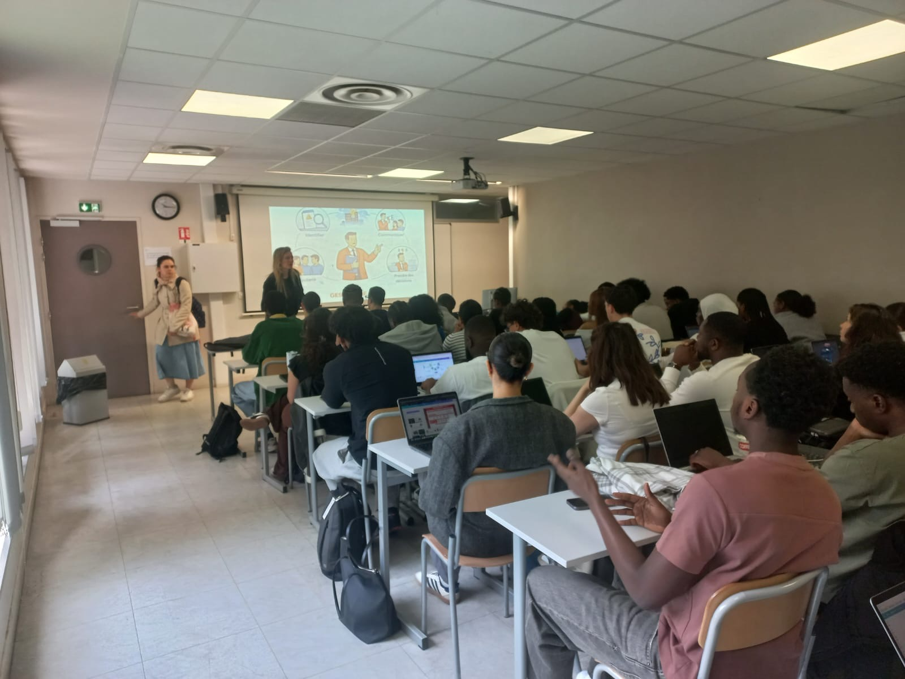
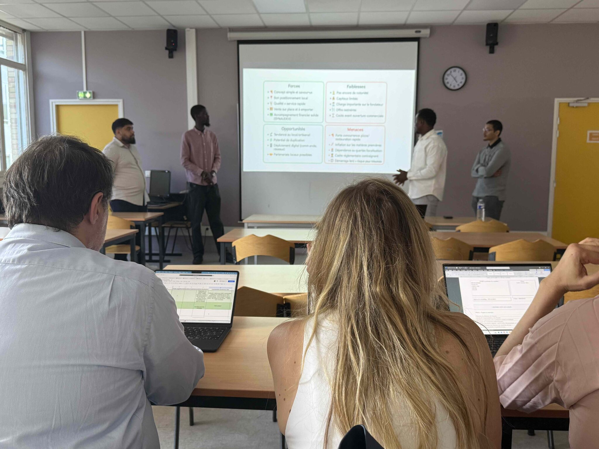
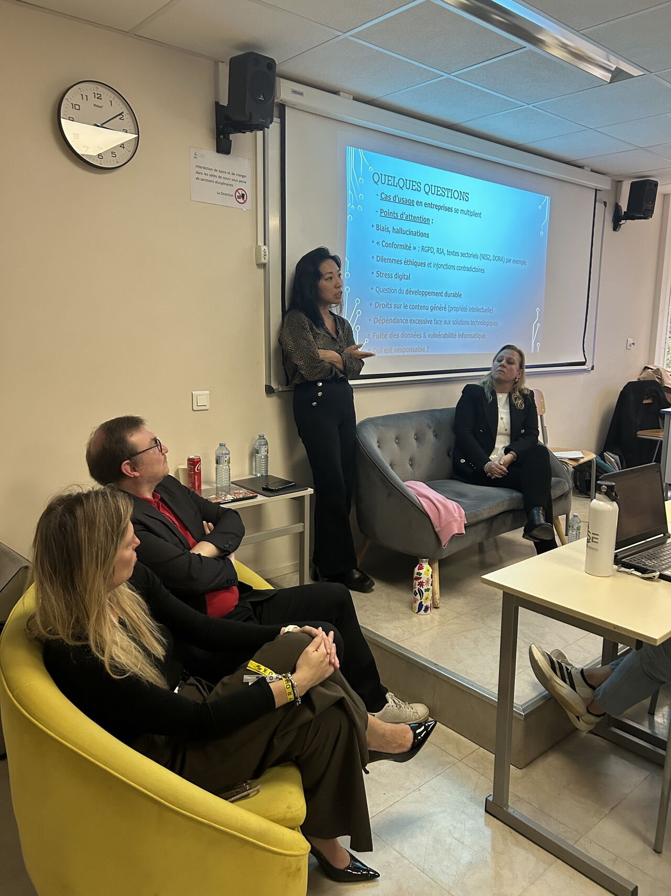
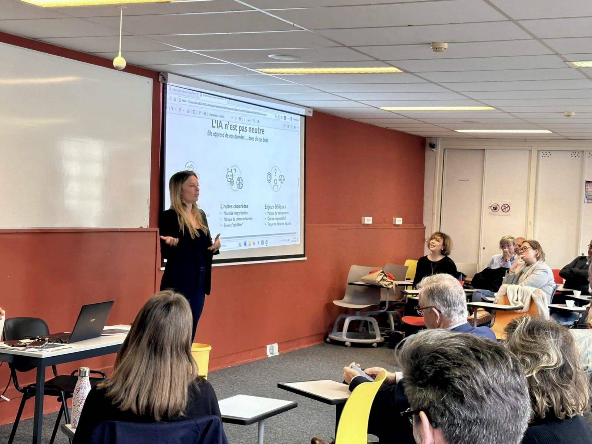
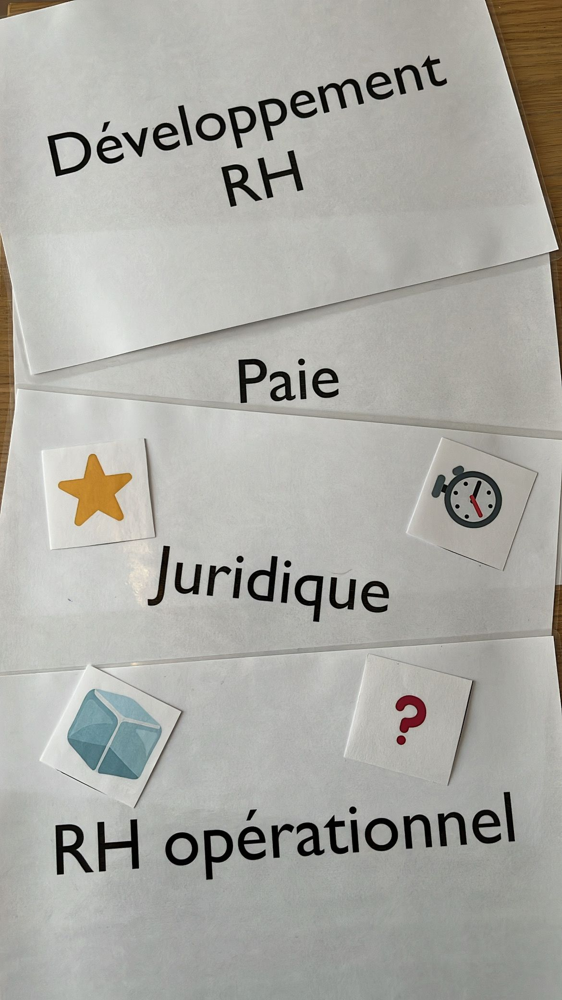
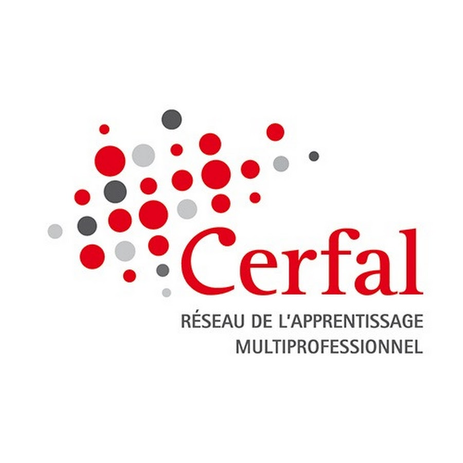

Talents et recrutement
Attirer, sélectionner et intégrer les bons profils avec méthode, justesse et impact.
- Recrutement et sourcing
- Marque employeur
- Expérience candidat
- Onboarding
RH · management · IA
Formations, séminaires et accompagnements sur mesure en RH, management, recrutement et IA appliquée aux métiers.
Expertises
Des interventions conçues pour relier les besoins terrain, la montée en compétences et l’impact opérationnel, sans perdre la précision RH.
Attirer, sélectionner et intégrer les bons profils avec méthode, justesse et impact.
Accompagner les étudiants, jeunes professionnels et publics en transition dans leur recherche de stage, alternance, emploi ou évolution professionnelle.
Concevoir des formations terrain qui font pratiquer, progresser et repartir avec du concret.
Accompagner les managers et les équipes dans leurs pratiques, leurs postures et leurs décisions.
Identifier les bons usages, gagner du temps et préserver la valeur ajoutée humaine.
IA appliquée
Gagner du temps sans perdre sa valeur ajoutée.
L’IA transforme les façons de travailler. Mais la vraie question n’est pas de tout automatiser. La vraie question est : quelles tâches peuvent être accélérées par l’IA, et où l’humain doit-il garder toute sa valeur ?
SJ Conseil accompagne les RH, étudiants, formateurs, managers et professionnels dans une utilisation concrète, progressive et responsable de l’IA.
Objectif : mieux rédiger, mieux structurer, mieux analyser, mieux s’organiser — sans perdre le sens métier, l’esprit critique et la responsabilité humaine.
L’IA peut aider à produire plus vite, structurer une idée, synthétiser, préparer un support ou automatiser certaines tâches répétitives. Mais elle ne remplace ni le discernement, ni la relation humaine, ni la décision, ni l’expérience terrain, ni la responsabilité professionnelle.
Chez SJ Conseil, l’IA est abordée comme un levier : utile, concret, cadré.Progression
Comprendre les usages, les limites et les bons réflexes.
Formuler des demandes efficaces et contextualisées.
Organiser ses idées, ses supports et ses analyses.
Produire des contenus, exercices, supports et scénarios.
Identifier les tâches répétitives et cadrer les usages avancés.
Usages
RHRecrutement, sourcing, entretiens, GEPP, formation, marque employeur.
FormateursSupports, scénarios pédagogiques, quiz, cas pratiques.
Étudiants et professionnelsCV, LinkedIn, préparation d’entretien, organisation.
Managers et équipes supportComptes rendus, synthèses, plans d’action, communication.
Une IA utile, jamais automatique.L’IA peut accélérer. L’humain doit toujours cadrer, vérifier, décider et assumer.
- Confidentialité
- RGPD
- Biais
- Vérification
- Limites de l’automatisation
- Validation humaine
Formation IA
Construisons une formation adaptée à votre niveau, vos métiers et vos objectifs.
Méthode
Les formations partent du réel : vos publics, vos contraintes, vos situations métier et vos objectifs opérationnels.
Publics, contraintes, objectifs, irritants, niveau réel.
Cas concrets, outils, supports, rythme pédagogique.
Mises en situation, ateliers, productions, feedbacks.
Transfert, plan d’action, réutilisation dès le lendemain.
Une formation terrain, ce n’est pas une salle qui écoute. C’est un groupe qui comprend, pratique et repart avec quelque chose à faire.
Sur le terrain
Des formations, séminaires et ateliers conçus pour faire pratiquer, questionner et passer à l’action.
Le format s’adapte aux publics, aux objectifs et au niveau réel du groupe : étudiants, professionnels, équipes RH, managers ou formateurs.





Références
Entreprises, écoles et organisations accompagnées sur des sujets RH, recrutement, management, formation et IA appliquée.

Des interventions conçues pour relier les enjeux terrain, la pédagogie active et les transformations métiers.

À propos
Consultante RH & formatrice — fondatrice de SJ Conseil
J’accompagne les écoles, entreprises et professionnels sur des sujets RH, recrutement, management, formation et IA appliquée aux métiers. Mon approche : des contenus structurés, des cas concrets, des mises en pratique et une exigence simple — que chacun reparte avec quelque chose d’utile dès le lendemain.
Après plus de 12 ans d’expérience terrain, et depuis 2019 avec SJ Conseil, je conçois des interventions sur mesure pour professionnaliser les pratiques, transmettre avec méthode et faire progresser durablement.
Une discipline sportive bien ancrée, une fidélité assumée à Alpine, un goût certain pour les univers puissants… et une exigence constante : faire progresser, avec sérieux, énergie et un peu de panache.
Que la Force soit avec vous.Contact
Une formation.
Une conférence.
Un séminaire.
Un accompagnement sur mesure.